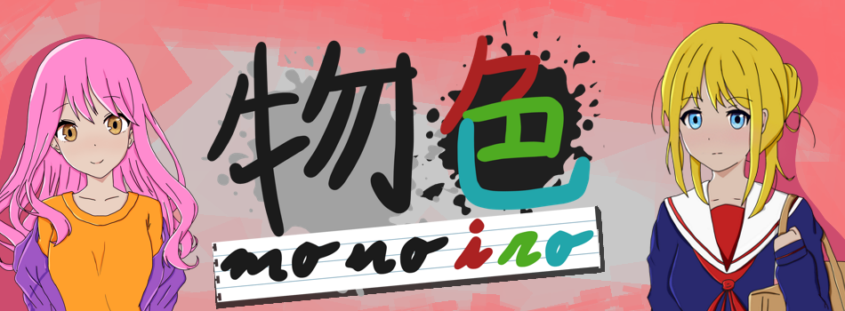

Monoiro Game

- 

El juego
Los ojos son la ventana del alma, y en esta novela, los tuyos verán a través de la de M.C. La vida, una vez carente de color y sentido, se volverá un festín visual mientras recorres los diferentes caminos que ofrece Monoiro, devolviéndole tanto la esperanza como la visión al protagonista. Deberás descubrir de la mano de este el amor verdadero, relacionándote con los candidatos para ayudar a M.C. a entender el porqué de su extraña condición.
En esta novela visual tú decides con quién y cómo te relacionas. Pero, sobre todo, descubrirás hacia donde te dirigen tus propias acciones, descubriendo nuevos colores según avances en su atrapante historia. ¡Lánzate y redescubre los conceptos de amor y color en Monoiro!
Los personajes


El gameplay
Monoiro es una visual novel tradicional que se desarrolla a lo largo de un año del mc. Durante este año, el mc tratara de encontrar a aquella persona que le hizo recobrar los colores en su vida.
Al acabar cada día, el jugador tendrá acceso a su diario donde se le darán varias opciones a rellenar. Dependiendo de las opciones elegidas, el jugador experimentará cambios en la historia y en la ruta que haya elegido. La unión entre las decisiones que tomes en tu día y los recuerdos que elijas escribir en tu diario harán de tu historia una única y personal.
Vive tu propia historia en Monoiro.
La música
Esta es la música original de Monoiro, ¡Disfrútala!
Grey Days - Victoria Iglesias
Colorful - Victoria Iglesias y Pablo Álvarez de Lara